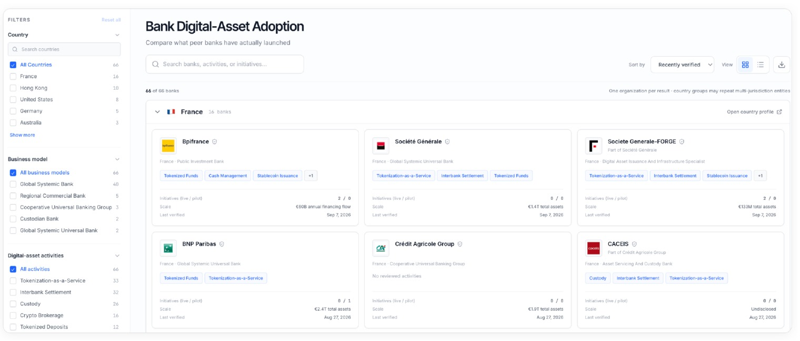
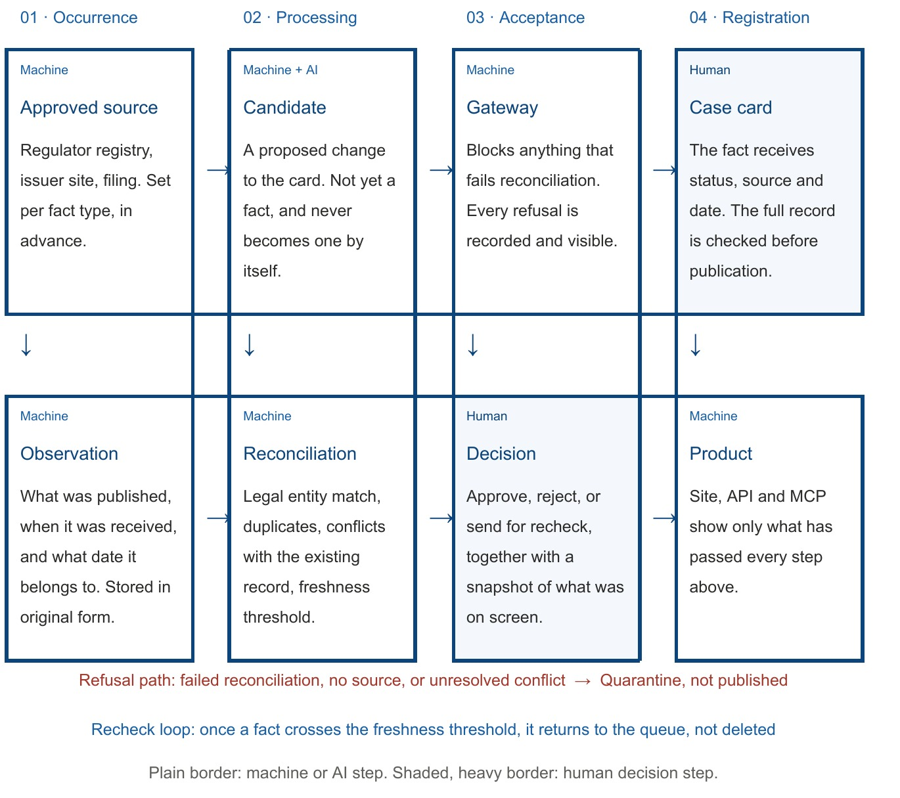

How do we collect and verify Digital Assets data
Describes a working mechanism as of September 2026, not a development plan.

Every fact moves through four phases: it occurs, it is processed, it is accepted or refused, and, once accepted, it is registered on a published card. A machine can collect, compare, and refuse. Only a human can approve.

We do not rate the card. We check each statement separately.
There is no single "reliability score" for a case. Instead, a case is a set of individual facts, and each fact carries its own status, source, and date. Some are confirmed by a source, some are only declared, and some are honestly marked as unknown.
This is the key difference from a typical market report or vendor presentation, where an entire story is told with the same degree of confidence throughout. Within one case, the existence of a product might be confirmed by a regulator's record, the list of participants by a joint announcement, and current client availability might be nothing at all.
The unit of trust is therefore not the page, but the line: one specific statement with its own status, source, and date. You can see exactly where the verified line runs, without being forced to accept the whole card on faith or reject it entirely.
| Concept | What it means |
|---|---|
| Unit of trust | A single assertion, not a "checked case." For example: "legal entity confirmed by a registry entry dated August 9; launch date from the issuer's application; volume unknown." |
| Who decides | A human, with the decision fixed in the record. Only a person can approve a fact, and that decision is stored together with a snapshot of what was seen at the time. |
| What is shown | Only what passed. The website, API, and MCP integration all read from the same verified case. What has not been checked is not shown in small print. It is simply not shown. |
Why is there no single reliability score? (like 87/100)
A summary score looks convenient until the moment you need to rely on it in a decision. It does not answer the question you are actually asking: what exactly is unproven here.
A score of 87 out of 100 could describe three very different situations: a weak source with fresh data, a strong source with stale data, or a complete absence of scale information. Instead of one number, four values are shown side by side: how many facts are confirmed, which class of source backs them, how fresh they are, and whether there are discrepancies. These values are not combined into one score, and that is precisely what makes them usable in a decision.
The card header answers one question before you read the case itself: how far can you rely on this.
| Indicator | What it shows | What to do with it |
|---|---|---|
| Coverage | How many facts in the dossier are confirmed, how many are declared, and how many are unknown. | Look not at the share confirmed, but at which facts fell into "unknown." An unknown issuance volume and an unknown market maker are very different gaps. |
| Source class | The strongest class of source behind any fact in the case. | If the strongest class is an issuer's own publication, then no fact has independent confirmation. That may be enough for an internal comparison, but not for an argument before a committee. |
| Freshness | The median age, in days, measured from the date the fact refers to, not the date it was collected. | Regulatory status and volumes age fastest. A historical launch date never goes stale. |
| Discrepancies | How many facts carry a note about a conflict between sources. | Open the discrepancy note before quoting a figure. The system does not silently pick the "correct" version; both remain visible. |
| Status | What it gives you | What it does not give you |
|---|---|---|
| Verified | Direct confirmation by a source that is attached and can be opened via a link. | Not a permanent truth. Confirmation is tied to a date; over time the fact re-enters the recheck queue. |
| Reported | A statement exists, is recorded and traceable, but lacks direct confirmation of the required class. | Not a basis for an external claim. Usually the participant's own account of itself. |
| Unknown | We checked and did not find it. The gap is shown explicitly, not masked by an empty cell. | Not zero and not a denial. "Volume unknown" does not mean "zero volume." "No license found" does not mean "no license." |
A deliberate asymmetry. You can mark a fact "unknown" without a source; that costs nothing. You cannot mark it "confirmed" without a source; that is not possible in the system at all. Honesty is cheaper than confidence, and this is the only mechanism that keeps the record from gradually sliding toward optimistic language.
Sources are ranked by strength, but strength depends on what exactly you are trying to prove. An official registry is the strongest proof of a license, and almost no proof that a product is actually available to customers. A bank's press release is the opposite.
| Class | Strong for | Does not automatically prove |
|---|---|---|
| Official register | Legal entity, license, status, and permitted scope | That the product is running and available |
| Regulator document | Decision, order, terms of admission | Commercial product status |
| Issuer or organization | Existence of the product, declared launch, partners, segment | That permission exists, or independent success |
| Named supplier | Its own role and technical integration | The status of the entire initiative |
| Blockchain explorer | Deployed contract and observed activity | Who the legal issuer is, and who the tool is available to |
| Independent data provider | Confirmation and market metrics | Legal status |
A practical detail: when the system cannot determine a source's class, that source is ranked worse than the weakest known class, not average. Unknown source quality is never disguised as an average one.
These scales are read most often, including in industry reports, and are deliberately never mixed. None of them is derived from another.
| Value | What it means | What it does not mean |
|---|---|---|
| Announced | Publicly announced | That the product exists, runs, or is available to anyone |
| Pilot | Limited, narrow-scope launch | Accessibility to external clients |
| Live | Confirmed public sign of accessibility | Commercial success, volume, or profitability |
| Active | Continues to operate | That it is growing or being developed further |
| Scaled | Moved beyond pilot with confirmed scale | That the scale is comparable to yours |
| Low adoption | Launched, but observed uptake is low | That the business model has failed as such |
| Abandoned / pivoted | Collapsed, or changed direction | That the reason was regulatory; that has its own separate value |
| Regulator issue / migrated | Stopped by a regulator, or moved to different infrastructure | Anything about the quality of the underlying idea |
"Announced" and "live" sit next to each other in the same dictionary and are treated with equal weight. Calling an announcement a launch, a common industry habit, simply cannot be expressed here. In the same way, negative outcomes get their own explicit values: a project that folded does not disappear from the record or dissolve into silence.
| Scale | Answers the question | Typical values |
|---|---|---|
| Confidence | How well substantiated is the conclusion | Verified, likely, inferred, speculative, outdated |
| Evidence class | What class of evidence was collected | Official, filings, press only, needs verification, and similar |
| Maturity | What stage the initiative is at | Research, pilot, production, scaled, stale, retired |
| Research readiness | Is our own work on the case finished | Draft, needs review, published |
| What is missing | What kind of work remains | Needs sources, needs timeline, needs recheck, and similar |
Practical conclusion: a strong source does not make a product operational, and an operational product does not make a strong conclusion. To find a precedent you can cite before a committee, you need to look at all the scales together; the card places them side by side for exactly this reason.
Three inputs feed the system, and none of them creates a fact directly. Every input produces only a candidate: a proposed change to the card, tagged with a source, a date, and a content marker.
| Input | How it works |
|---|---|
| Publication monitoring | Pre-approved channels are checked regularly. Duplicates are filtered by address and content, so one story reprinted across five outlets does not become five confirmations. The original source text is stored separately from any machine-generated markup; the model cannot rewrite what was actually published. |
| Collection from official registries | A source must be explicitly admitted, and admitted for a specific type of fact. A source that is not on the approved list is not collected at all; it is not "gathered and set aside," it is simply not pulled in. Matching is done by a stable legal entity identifier, not by name. |
| Manual research | An analyst prepares the case directly. This is not a workaround: the material passes the same composition and source checks; a person is simply the author of the change. |
The expensive step is always protected by cheap ones. Before material is sent to a language model, it passes a simple formal filter. This is not a cost-saving measure; it is a methodological position. Material filtered out by a fixed rule never reaches machine interpretation, so there is no risk of it being mistaken for a finding.
Changing the entity match voids the earlier approval. If a candidate that was already reviewed later changes its match to a legal entity, the previous decision is reset and the fact returns for reconsideration. The earlier approval referred to the earlier match and is not carried over to the new one.
How facts age. Freshness is measured from the date the fact itself refers to, not the date it was collected. Downloading a two-year-old document yesterday does not make the fact fresh; this distinction is built into the data model and is visible on the card. A fact that crosses the freshness threshold is not deleted or hidden. It is marked as stale and returns to the recheck queue, meaning it stops looking current while its history is preserved. Facts with no date at all form a separate category, distinct from stale ones.
The value of a case is determined as much by what did not make it in as by what did. Below are the checks a candidate must pass before it ever reaches a human reviewer.
| No. | Check | Outcome on failure |
|---|---|---|
| 1 | This candidate has already been rejected once | Not considered again |
| 2 | The legal entity is defined exactly, not presumably | Quarantine. A probable match is never published, regardless of the similarity threshold |
| 3 | The source is on the list of admitted sources | Quarantine |
| 4 | The source is active and admitted for this type of fact | Quarantine |
| 5 | There is a clear path for human approval | Goes forward for consideration |
| 6 | Or: the rare automatic pass, an exact match, an admitted source, and an official registry entry, all at once | Goes forward for consideration |
The order of these checks matters. Entity identity (check 2) is verified before source rights (checks 3 and 4): registry primacy does not fix an inaccurate match, because it answers a different question. A subsidiary's license is not transferred to its parent group merely because the source is authoritative. The one permitted automatic pass requires every condition to match at once and has no adjustable threshold. It is not "the system decided this was enough"; it is a rule with no parameter that can be relaxed under deadline pressure.
For anyone who needs to explain the origin of the data inside their organization.
Figure 2. Machine, AI, and human roles are kept structurally separate.
The pattern is deliberate: whoever initiates a candidate cannot be the one who confirms it. The mechanism that assembles a case is structurally unable to approve its own output. This is a separate action carried out by a separate role, in the same way payment controls separate initiation from authorization.
Every decision is stored as an unchangeable record, together with a snapshot of exactly what was in front of the reviewer: which meaning, which match, which source. If the source changes later, what was approved at that moment can still be reconstructed. This differs from a simple activity log of "who clicked what, when": it preserves not only the action but the basis for it.
Public visibility is designed so that an error leads to under-disclosure, not to a leak. The visibility rule operates at the level of the data model itself, not at the level of individual screens, so it is not possible to "forget to apply a filter" in just one place.
Read this section before using the data in material intended for a committee or a regulator.
The approach is not invented from scratch. Each element is borrowed from a field where the cost of an error in handling evidence is not measured only in reputation.
| Discipline | What is borrowed | What it provides |
|---|---|---|
| Bank internal control | The four-eyes principle: the initiator does not confirm | No automated mechanism can publish a fact about a competitor or a partner |
| Intelligence analysis | Admiralty Code, STANAG 2511 | Source reliability and information reliability are scored on two independent scales, shown side by side. A primary source with a stale date and a secondary source with a fresh one are visibly different situations, not one blended score |
| Evidence-based medicine | The GRADE system | Evidence quality is assessed separately from the strength of the conclusion; imprecision and indirectness lower the rating explicitly, so it is clear where a conclusion rests on direct evidence versus a plausible reconstruction |
| Argumentation theory | The Toulmin scheme | A claim is never separated from its grounds, warrant, and qualifier; "confirmed means there is a source" functions as a hard constraint, not a stylistic preference |
| Audit and reporting | An immutable decision trail; the fact date kept separate from the record date | The origin of any figure can be reconstructed without re-investigation |
| Knowledge representation | The open-world assumption | Absence of information is never treated as negation; gaps are shown as gaps, not silently converted to zero |
| Master data management | Stable identifier mapping; a probabilistic match treated only as a signal to check | A group of companies does not merge into one legal entity because of a similar name |
| Data engineering | Write, audit, publish | The full set is checked before publication rather than published as it is written; a case is never caught mid-update |
What we deliberately do not do. We do not calculate a combined reliability score. We do not rate the reputation of a domain, since a bank's own website mixes regulatory filings with marketing content of very different evidentiary strength. We do not use checklists that grade an entire page; a single statement remains the unit of assessment. We do not treat the number of sources found as a quality signal in itself.
This is not a statement of intent. Each rule below is enforced as a technical constraint. It cannot be broken by inattention, because the system will not permit it.
Any new rule in the methodology is considered adopted only once it becomes a system constraint. A rule that exists only on paper offers no real protection; it can be broken not through bad intent, but simply through inattention.
Directions still under construction, including automated monitoring of verified sources with immutable document copies, and traceability at the level of an individual fragment, are intentionally left out of this document so as not to blend what has been built with what is planned.